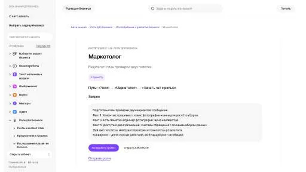
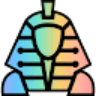

AdoutГенерация рекламы
Для «Adout» сначала определите свою задачу и требуемый результат. Карточка относится к направлению «Генерация рекламы».
Раздел «Для маркетологов»: варианты ИИ для этой задачи, описания возможностей и переходы к обзорам. Сравните несколько решений на одинаковом примере.
Возьмите конкретное обращение и подтверждённые свойства продукта. Молекула поможет сформулировать предложение под задачу покупателя; гипотезы о результате проверяйте на реальных материалах.
Клиент ищет органайзер для узкой полки. По нашим размерам и условиям доставки подготовь сообщение. Отметь, какие размеры покупатель должен сообщить перед выбором модели.

Для «Adout» сначала определите свою задачу и требуемый результат. Карточка относится к направлению «Генерация рекламы».
«ChatGPR» работает с материалами для социальных площадок.
Для «Digen AI» сначала определите свою задачу и требуемый результат. Карточка относится к направлению «Создание контента».
«GrowEasy» представлен в разделе «Маркетинг». При выборе проверьте нужную операцию и условия работы с результатом.
«HubSpot Campaign Assistant» готовит текстовый черновик по условиям задачи.
«Infomail AI» представлен в разделе «Email». При выборе проверьте нужную операцию и условия работы с результатом.
SellerAi помогает продавцу создавать описания товаров и автоматизировать подготовку контента. В продукте используются языковые и визуальные модели, а письменные материалы поддерживаются на разных языках. Инструмент ориентирован на электронную торговлю, где требуется готовить представление товара для нескольких аудиторий.

В инструменте «SEO.ai» можно связывать действия в автоматизированный процесс. Ещё одно направление работы: исследовать тему и разбирать найденную информацию.
Сравнивать «Whatsapp Business API» с другими инструментами раздела «Автоматизация» удобнее на одинаковом исходном материале.
Yes Ai Bot объединяет ИИ-модели для текста, изображений и видео в разговорном интерфейсе Telegram. Среди дополнительных операций есть замена лиц и локальное редактирование, а также увеличение изображения. API для разработчиков дополняет обращение к инструментам российского агрегатора в выбранном пользовательском сценарии.
ZeusGPT объединяет модели для текстовых и визуальных задач в одном веб-приложении. Также представлены музыкальные инструменты и озвучивание, дополняющие работу с изображениями и видео. Российская платформа поддерживает расчёты в рублях и предоставляет разговорный ИИ-интерфейс для обращения пользователя к доступным возможностям.
Alli AI организует SEO-работу для компаний и маркетинговых агентств. В наборе предусмотрены массовые изменения, редактирование в ходе работы, структурированная разметка и автоматические A/B-эксперименты. Инструмент связывает применение правок с проверкой вариантов, позволяя работать над группами страниц вместо независимого ручного изменения каждого отдельного элемента сайта.
«Bloom AI (onbloom.app)» представлен в разделе «Email». При выборе проверьте нужную операцию и условия работы с результатом.
Chat360 помогает компаниям создавать чатботов с применением ИИ. Предусмотрены подключения к WhatsApp, Facebook Messenger и Instagram, чтобы вести взаимодействие с клиентами в этих каналах. Конструктор относится к организации общения вокруг обслуживания и продаж, объединяя подготовку помощника с выбранной площадкой обмена сообщениями.

Copy.ai связывает подготовку текста с процессами маркетинга и продаж. Пользу следует оценивать по конкретному рабочему материалу, который нужен команде.
Сравнивать «Dicer AI (dicer.ai)» с другими инструментами раздела «Маркетинг» удобнее на одинаковом исходном материале.
«Glov» разбирает данные для рабочего анализа.
«Google Trends Supercharged 2» представлен в разделе «Бизнес». При выборе проверьте нужную операцию и условия работы с результатом.
Hookle помогает малому бизнесу вести социальные публикации с использованием ИИ. В наборе предусмотрены генерация содержимого, планирование размещения, работа с хештегами и аналитика. Продукт объединяет подготовку текста с организацией публикационной последовательности, чтобы создание отдельного материала рассматривалось вместе с графиком и последующим разбором активности канала.
«INK» готовит визуальные материалы по заданию. «INK» также помогает с задачами поискового продвижения.
Insight7 анализирует данные средствами ИИ, выделяя темы и настроение материала. Продукт предоставляет командам сведения для рассмотрения пользовательского опыта. Эти функции связывают исходное содержание и обнаруженные тематические признаки, которые участники могут учитывать в ходе дальнейшей работы с исследуемыми материалами.
Masha GPT объединяет доступ к нескольким текстовым нейросетям в русскоязычном чате. Описаны также направления генерации картинок, видео и музыкальных материалов с использованием разных моделей. Продукт представляет общий вход к таким задачам, где работа с текстом соседствует с подготовкой визуального и звукового контента.
Сравнивать «Potion» с другими инструментами раздела «Видео» удобнее на одинаковом исходном материале.

Для «Sphinx Mind» сначала определите свою задачу и требуемый результат. Карточка относится к направлению «Маркетинг».
Сравнивать «Subject Line Generator» с другими инструментами раздела «Email» удобнее на одинаковом исходном материале.
Success AI помогает организовывать электронный маркетинг с использованием ИИ. Платформа объединяет автоматизацию и аналитические сведения, а также работу с входящими сообщениями. Основное назначение связано с поиском потенциальных клиентов и продолжением деловых контактов в рамках процесса письменного взаимодействия компании.
Сравнивать «Adobe GenStudio» с другими инструментами раздела «Маркетинг» удобнее на одинаковом исходном материале.
«Adpilot» представлен в разделе «Маркетинг». При выборе проверьте нужную операцию и условия работы с результатом.
Aimylogic позволяет собирать чат-ботов и голосовые процессы в визуальном конструкторе. Российская платформа Just AI поддерживает распознавание естественной речи и обучение на намерениях пользователя. Доступны сценарии обзвона и IVR, а для внешних систем предусмотрены API и вебхуки.
«FusionAI (fusionai.world)» помогает составить сказочный сюжет.
Genroom создаёт варианты оформления интерьера, фасада или двора на основе фотографии. Пользователь выбирает стилевое направление и получает реалистичную визуализацию изменений. При разборе результата следует сопоставлять планировку, окна и двери с исходником, рассматривая картинку как вариант образа, а не подтверждённый технический проект пространства.
«Holler» представлен в разделе «Бизнес». При выборе проверьте нужную операцию и условия работы с результатом.
«Journey+ (journeyplus.ai)» готовит визуальные материалы по заданию.
«Name Drop AI» работает с материалами для социальных площадок.
«OpenAIDonakosy» представлен в разделе «Email». При выборе проверьте нужную операцию и условия работы с результатом.
Reddit Scout находит обсуждения Reddit, относящиеся к заданному продукту или его категории. Из разговоров отбираются комментарии с высокими оценками и представляются в сокращённом виде. Инструмент предназначен для просмотра пользовательских мнений вокруг темы, когда вместо полной ветки нужен компактный набор высказываний.
Smodin объединяет средства генерации и переработки текста в многоязычной платформе. В набор входят перефразирование, перевод, краткое изложение, проверка заимствований и инструменты анализа ИИ-текста. Продукт предназначен для нескольких этапов письма, где первоначальный вариант материала можно переписать, сократить или рассмотреть с помощью отдельных текстовых проверок.
«Vidyard» представлен в разделе «Маркетинг». При выборе проверьте нужную операцию и условия работы с результатом.
«Abyssale» готовит материалы для указанных письменных форматов.
Сравнивать «adcopy AI» с другими инструментами раздела «Маркетинг» удобнее на одинаковом исходном материале.
AiSearh объединяет текстовые, графические, звуковые и видеомодели в общем веб-интерфейсе. Среди задач предусмотрены написание текста и кода, изображения, озвучка и ролики. Встроенная ИИ-среда для сайтов и приложений дополняется расширением Chrome и Telegram-ботом, связывая разные виды генерации с несколькими способами доступа к платформе.
Doyoula преобразует загруженные фотографии в портреты и цифровые аватары с помощью генеративной модели. Пользователь работает через Telegram-бота и выбирает визуальный стиль. После обработки он получает изменённый образ, который создаётся на основе собственного исходного снимка и выбранного оформления.

Flair.ai используют, чтобы готовить материалы о товарах и услугах. Ещё одно направление работы: получать изображения из словесного задания.
«Get Genie» связан с рабочими процессами WordPress. «Get Genie» также помогает с задачами поискового продвижения.
«GPTJet» представлен в разделе «Генерация изображений». При выборе проверьте нужную операцию и условия работы с результатом.
«Infografix» представлен в разделе «Генерация изображений». При выборе проверьте нужную операцию и условия работы с результатом.
«M1-project» представлен в разделе «Бизнес». При выборе проверьте нужную операцию и условия работы с результатом.
MagicBrief организует работу с рекламными материалами и их обсуждением в команде. Предусмотрены библиотеки объявлений, раскадровка и анализ средствами ИИ. Папки, фильтры и теги помогают распределять выбранные материалы, а совместная работа связывает собранные примеры рекламы с подготовкой и рассмотрением собственного визуального сценария.
Страница 4 из 5